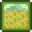
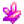
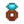
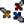
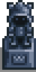

Compétences
| Commencer | Le joueur | Options | Commandes | Contrôles mobiles |
Santé | Énergie | Compétences | Cycle de jour |
Les Compétences sont des atouts pour le joueur. Elles progressent grâce à l'utilisation d'outils ou à des actions spécifiques. L'amélioration des compétences permettra d'accroître l'efficacité de certains outils mais aussi de débloquer de nouvelles recettes de fabrication tout aussi utiles qu'uniques.
En gagnant suffisamment de points d'expérience pour un nouveau niveau, l'efficacité sera immédiatement augmentée et notée dans l'onglet Compétences du menu du joueur. L'outil associé gagnera aussi immédiatement son amélioration d'utilisation. La première fois que le joueur augmente une compétence dans une journée, une notification apparaît : "Vous avez de nouvelles idées auxquelles vous devez réfléchir..."
Chaque compétence a 10 niveaux. Dans la nuit, après que le joueur se soit couché le jour où un niveau de compétence augmente, une fenêtre contextuelle annonce l'augmentation et les récompenses (recettes d'artisanat ou de cuisine). Aux niveaux 5 et 10, les joueurs sélectionnent également une des deux professions disponibles dans laquelle ils veulent se spécialiser. Chaque profession a son propre ensemble d'avantages, tels que des bonus de prix de vente pour les objets associés. À noter que les récompenses telles que les recettes ou les avantages du métier n'ont lieu que lorsqu'elles sont vues dans la fenêtre contextuelle (pop-up) durant la nuit et ne sont disponibles qu'à la première heure du lendemain matin. En particulier, les articles vendus ou expédiés le jour de l'augmentation du niveau de compétence ne reçoivent pas les nouveaux bonus de prix. Comme les recettes, les avantages des métiers ne sont disponibles qu'à partir du lendemain.
Toutes les compétences ont besoin des points d'expérience suivants pour augmenter le niveau de compétence :
|
|
Une grande variété de compétences peuvent être temporairement améliorées en consommant des aliments spécifiques. Ces augmentations provisoires apparaissent sous la forme d'une icône de buff (un bonus) à côté de l'horloge, en haut à droite. Les compétences peuvent être visualisées dans l'onglet Compétences des joueurs, dans le menu pause.
| Les niveaux sont atteints en récoltant et en prenant soin des animaux. Chaque niveau octroie +1 en efficacité de la houe et de l'arrosage (voir Outils). | |
| La compétence d'exploitation minière s'améliore lorsque le joueur brise des roches (normalement avec une pioche). Chaque niveau octroie +1 en efficacité de pioche. | |
| La compétence Cueillette comprend à la fois les objets ramassés et le bois provenant d'arbres coupés à la hache. Chaque niveau octroie +1 en efficacité de hache. | |
| La compétence de pêche augmente soit lorsqu'on réussi le mini-jeu associé, soit quand on récupère un poisson dans le casier à crabes. Chaque niveau octroie +1 en efficacité de canne à pêche. | |
| La compétence combat est liée à la capacité qu'à le joueur à lutter contre les monstres. |
Efficience
L'efficience fait référence à la quantité d'énergie nécessaire pour utiliser un outil spécifique.
Au niveau 0 de compétence, chaque coup de pioche, de hache et de houe utilise 2 points d'énergie. Chaque utilisation de la canne à pêche utilise 8 points d'énergie. L'arrosoir de départ utilise quant à lui 2 points d'énergie.
Chaque augmentation dans les compétences diminue le besoin en énergie pour les outils de 0,1 point (le jeu garde la trace des quantités fractionnaires d'énergie, mais dans l'interface utilisateur elles sont arrondies à l'entier le plus proche). Les augmentations de compétence au-delà du niveau 10 (uniquement possible temporairement via les buffs) continuent de diminuer les besoins en énergie.
Le fait de charger complètement un arrosoir amélioré en maintenant le clic ou la touche de raccourci correspondante appuyé augmente son coût en énergie de 2 points par amélioration. Cependant, chaque augmentation de compétence fait diminuer ces besoins en énergie de 0,1 par amélioration. Au niveau 0 d'agriculture, l'arrosoir de base consomme 2 points d'énergie là où l'arrosoir d'iridium en consomme 10. Au niveau 10 d'agriculture, l'arrosoir de base consomme 1 point d'énergie là où l'arrosoir d'iridium en consomme 9 (10 moins 0.1 par niveau de compétence). L'utilisation d'un arrosoir amélioré pour arroser une case coûte la même énergie que l'arrosoir de départ. Tenter d'utiliser un arrosoir vide ne coûtera jamais d'énergie, tout comme le fait de remplir son arrosoir.
Améliorer une hache, une pioche ou une houe ne diminue pas la quantité d'énergie nécessaire à l'utilisation de ces outils. L'efficacité accrue de la hache, de la pioche ou de la houe cependant, fera en sorte qu'un plus petit montant d'énergie globale soit utilisée sur la même tâche qu'un outil de niveau inférieur (on passera par exemple de 15 coups de hache dans un arbre avec la hache de base, à 6 coups pour la hache d'or).
Il faut noter que toutes les houes utilisent la même quantité d'énergie (2 points au niveau 0 d'agriculture et 1 point pour le niveau 10) qu'elles soient complètement chargée pour labourer une plus grande zone ou pour ne faire qu'une case.
Toutes les cannes à pêche utilisent la même quantité d'énergie : 8 points au niveau 0 de pêche et 7 points au niveau 10.
Outils concernésAgriculture Cueillette Pêche Extraction minière |
Outils non concernésLes outils ci-dessous ne consomment pas d'énergie: Les outils ci-dessous consomment 4 points d'énergie: |
Ni le changement d'appât dans les casiers à crabes, ni leur récolte ne consomment d'énergie, quel que soit le niveau de la compétence.
 Agriculture
- Article principal : Agriculture
La compétence Agriculture s'acquiert en récoltant les plants arrivés à maturité. Prendre soin des animaux augmente également le gain d'expérience : caresser, traire et tondre les animaux de la ferme ou ramasser un produit animal dans une étable ou un poulailler donne 5 point d'expérience. L'utilisation d'une houe et d'un arrosoir ne donne pas d'expérience. Chaque niveau accorde +1 en efficience à la houe et à l'arrosoir.
| Niveau 1 | Niveau 2 | Niveau 3 | Niveau 4 | Niveau 5 | |||||||||||
|---|---|---|---|---|---|---|---|---|---|---|---|---|---|---|---|
| Recettes fabrication : | Recettes fabrication : | Recettes fabrication/cuisine : | Recettes fabrication : | Choisir une profession : | |||||||||||
|
|
(Le bonus s'applique sur tout les légumes et fleurs, plus les fruits qui n'ont pas été cueillis) | |||||||||||||
| Niveau 6 | Niveau 7 | Niveau 8 | Niveau 9 | Niveau 10 | |||||||||||
| Recettes fabrication : | Recettes fabrication : | Recettes fabrication : | Recettes fabrication : | Éleveur de bétail : | Cultivateur : | ||||||||||
|
|
|
(Améliore également la qualité des produits du poulailler, voir les détails ici) |
| |||||||||||
(Améliore également la qualité des produits de la grange, voir les détails ici) |
| ||||||||||||||
 Extraction minière
Extraction minière
- Article principal : Extraction minière
L'extraction minière voit son expérience augmenter lorsque le joueur brise des roches. Chaque niveau gagné accorde +1 à l'efficience aux pioches. L'on obtient des points d'expérience lorsque des roches sont détruites - peu importe si cela est fait à la pioche, à l'aide d'une bombe ou par l'action de monstres.
Les différents types de roches donnent des nombres différents de points d'expérience.
| Niveau 1 | Niveau 2 | Niveau 3 | Niveau 4 | Niveau 5 | |
|---|---|---|---|---|---|
| Recettes fabrication : | Recettes fabrication : | Recettes cuisine : | Recettes fabrication : | Choisir une profession : | |
| Escalier |
|
| |||
| Niveau 6 | Niveau 7 | Niveau 8 | Niveau 9 | Niveau 10 | |
| Recettes fabrication : | Recettes fabrication : | Recettes fabrication : | Recettes fabrication : | Mineur : | Géologue : |
|
| ||||
|
 Gemmologue
| ||||
 Cueillette
Cueillette
- Article principal : Cueillette
La cueillette est améliorée par le fait de ramasser des plantes sauvages au travers de toute la vallée, mais également de couper des arbres. Chaque niveau gagné accorde +1 en efficience à la hache.
| Niveau 1 | Niveau 2 | Niveau 3 | Niveau 4 | Niveau 5 | |
|---|---|---|---|---|---|
| Recettes fabrication : | Recettes fabrication : | Recettes fabrication : | Recettes fabrication : | Choisir une profession : | |
|
|
|
| ||
| Niveau 6 | Niveau 7 | Niveau 8 | Niveau 9 | Niveau 10 | |
| Recettes fabrication : | Recettes fabrication : | Recettes fabrication : | Recettes fabrication : | Forestier : | Chasseur-cueilleur : |
|
|
| |||
|
| ||||
Les points d'expérience sont répartis comme suit :
- 14 XP en abattant des Arbres avec une hache (accordés d'un coup lorsque le dernier coup de hache fait tomber l'arbre).
- 2 XP en retirant la souche restante après l'abattage d'un arbre.
- 1 XP pour chaque brindille dégagée.
- 1 XP pour chaque morceau de Mousse récupéré d'un arbre.
- 1 XP par baie récoltée en secouant des buissons de Mûres et de Baies de saumon dans leurs saisons respectives.
- 25 XP en retirant des Grandes souches et des Grande bûches.
- 7 XP pour chaque objet de cueillette ramassé au sol.
- Si la profession Chasseur-cueilleur double le gain de cueillette, 7 XP sont aussi donnés pour l'objet supplémentaire.
- 7 XP pour chaque Gingembre récolté.
- 3 XP pour chaque Oignon nouveau récoltés dans la Forêt Sève-Cendreuse au Printemps.
- 2 XP pour les items issus de Graines sauvages (+ 3 XP d'Agriculture)
- Si la profession Chasseur-cueilleur double le gain de cueillette, 2 XP sont aussi donnés pour l'objet supplémentaire.
- 7 XP pour chaque objet récupéré grâce au Tamis. Par exemple si le joueur obtient 3 objets en tamisant, il recevra 21 XP.
- 5 XP pour chaque champignon récolté dans la Grotte si l'option des champignons a été choisie, et des Bûches à champignons.
- 7 XP pour chaque fruit récolté dans la Grotte si l'option des chauve-souris a été choisie.
- 15 XP en creusant un Lieu de graines ou un Lieu d'artefacts.
- 15 XP en détruisant une mauvaise herbe géante de la Pluie verte.
- 250 XP en lisant une copie du livre L'hebdomadaire du bûcheron ou du Livre des étoiles.
Les 7 XP pour les objets de cueillette s'appliquent uniquement aux objets visibles au sol qui seront ramassés si le joueur clique dessus; ils ne s'appliquent pas aux objets tombés par terre (par exemple qui tomberaient en secouant un arbre ou un buisson), qui sont ajoutés automatiquement à l'inventaire du joueur par magnétisme. Les objets spécifiques qui accordent les 7 XP sont :
- Les objets de cueillette standard apparaissant aléatoirement à travers la Vallée et le Désert de Calico.
- Tous les objets ramassés sur La plage et l'ouest de l'Île Gingembre.
- Tous les fruits ramassés dans la Grotte, si l'option des chauve-souris a été choisie.
- Tous les champignons collectés dans la grotte aux champignons de l'Île Gingembre.
- Les Truffes.
- Tous les objets de cueillette apparaissant sur le sol dans les Mines et la Caverne du Crâne, notamment les Champignons rouges, Champignons violets, et les Crosse de fougère.
Les objets suivants ne donnent PAS d'expérience de cueillette :
- Les arbres ou débris abattus grâce à des Bombes (mais affaiblir un arbre avec des bombes avant de le faire tomber avec une hache donnera quand même la totalité des points d'XP).
- Les Raisin ayant poussé sur des Graine de raisins (donnent de l'XP en Agriculture).
- Les objets poussant dans des Pots de jardin.
- Les objets déterrés en labourant le sol dans les Mines ou la Caverne du Crâne (par ex., Carrotte des cavernes)
- Les champignons obtenus grâce à un saigneur, ou en abattant un Arbre champignon.
- Les objets qui ne font pas partie de la cueillette, apparaissant aléatoirement sur le sol des Mines et de la Caverne du Crâne, comme le Quartz, le Cristal de terre, la Larme gelée, le Quartz de feu, et les Oeufs de dinosaures -- mais un bug fait que chaque objet dupliqué par la profession Chasseur-cueilleur donnera quand même 7 XP.
- Les objets de cueillette obtenus en tuant des Monstres.
 Pêche
Pêche
- Article principal : Pêche
La compétence de pêche augmente lorsque le joueur attrape des poissons, des déchets, des algues vertes ou des algues blanches avec une canne à pêche, ou en allant chercher ce que les casiers à crabes ont récolté.
Chaque niveau octroie +1 en efficience à la canne à pêche, augmente la taille minimale des poissons pêchés ainsi que celle de la barre défilante dans le mini-jeu, mais également le temps d'attente avant qu'un poisson ne morde. Cette compétence augmente aussi les chances de trouver des poissons ayant une qualité plus élevée (avec une étoile d'argent ou d'or par exemple).
| Niveau 1 | Niveau 2 | Niveau 3 | Niveau 4 | Niveau 5 | |||
|---|---|---|---|---|---|---|---|
| Recettes fabrication : | Recettes fabrication : | Recettes fabrication / cuisine: | Recettes fabrication : | Choisir une profession : | |||
| Distance de coulée augmentée d'une tuile |
|
|
|
|
| ||
| Niveau 6 | Niveau 7 | Niveau 8 | Niveau 9 | Niveau 10 | |||
| Recettes fabrication : | Recettes fabrication : | Recettes fabrication : | Recettes fabrication : | Pêcheur : | Trappeur : | ||
|
|
|
|
|
| ||
|
| ||||||
*Remarque : les traductions françaises de "Fisher" (niveau 5) et "Angler" (niveau 10) sont toutes deux "Pêcheur". Pour plus de clarté, ce wiki utilisera "Pêcheur (maître)" pour faire référence à la profession de niveau 10.
 Combat
Combat
- Article principal : Combat
La compétence de combat est augmentée lorsque le joueur affronte des monstres. Certains niveaux augmentent les points de vie (PV) totaux indiqués sur la jauge de santé du joueur.
| Niveau 1 | Niveau 2 | Niveau 3 | Niveau 4 | Niveau 5 | |||||||||||
|---|---|---|---|---|---|---|---|---|---|---|---|---|---|---|---|
| Recettes fabrication : | Recettes fabrication : | Recettes cuisine : | Recettes fabrication : | Choisir une profession : | |||||||||||
|  Anneau solide |
|
| |||||||||||||
| Niveau 6 | Niveau 7 | Niveau 8 | Niveau 9 | Niveau 10 | |||||||||||
| Recettes fabrication : | Recettes fabrication : | Recettes fabrication : | Recettes fabrication : | Combattant : | Éclaireur : | ||||||||||
|
|
|
|
 Acrobate
| |||||||||||
|
| ||||||||||||||
Changement de profession

La Statue de l'Incertitude dans les égouts permet au joueur de changer de profession. Après avoir donné  10 000po puis être allé se coucher, l'écran du niveau 5 de compétence ("Choisir une profession") pour la compétence choisie lors du marché avec la statue apparaîtra, suivi de l'écran correspondant au niveau 10 de compétence. La statue permet au joueur de changer une profession chaque jour.
10 000po puis être allé se coucher, l'écran du niveau 5 de compétence ("Choisir une profession") pour la compétence choisie lors du marché avec la statue apparaîtra, suivi de l'écran correspondant au niveau 10 de compétence. La statue permet au joueur de changer une profession chaque jour.
Seules les compétences pour lesquelles des métiers ont déjà été choisis apparaîtront dans le menu de la statue. Dès que le joueur choisit un métier à changer, les bonus des métiers existants disparaissent. Les compétences qui donnent des bonus au prix de vente ne s'appliqueront pas aux objets placés dans la corbeille d'expédition le jour où vous changez de profession.
Titre basé sur les compétences
En fonction de votre niveau de compétence total, vous obtiendrez un titre sous votre nom dans l'onglet Compétences du menu. Votre niveau et votre titre sont également visibles lorsque vous survolez votre photo dans l'onglet Inventaire du menu.
Le niveau dont dépend votre titre est calculé comme suit : (niveauAgriculture + niveauPêche + niveauCueillette + niveauCombat + niveauExtractionMinière + niveauChance) / 2
Si le résultat final contient 0,5, la valeur décimale est tronquée et seule la partie entière est prise en compte.
Voici les différents titres disponibles:
- niveau >= 30 : Maître de la ferme
- niveau > 28 : Maître des récoltes
- niveau > 26 : Agriculteur
- niveau > 24 : Cultivateur (anglais : Farmer)
- niveau > 22 : Éleveur de bétail
- niveau > 20 : Planteur
- niveau > 18 : Fermier
- niveau > 16 : Fille/Garçon de ferme
- niveau > 14 : Laboureur
- niveau > 12 : Petit propriétaire
- niveau > 10 : Cultivateur (anglais : Tiller)
- niveau > 8 : Ouvrier agricole
- niveau > 6 : Vacher
- niveau > 4 : Paysan
- niveau > 2 : Néophyte
- niveau <= 2 : Nouveau venu
Vous aurez besoin de 10 en niveau de chance, ainsi que 10 dans toutes les compétences pour atteindre le titre le plus élevé : Maître de la ferme. Cependant, le niveau de chance (une valeur séparée de la valeur quotidienne Chance) n'est pas implémenté dans le jeu. Le niveau de chance semble (dans le code du jeu) avoir été conçu comme une 6ème compétence qui pourrait être à niveau comme toutes les autres. Cela signifie que le plus haut niveau atteignable est le niveau 25, le meilleur titre à obtenir est donc "Cultivateur".
Maîtrise
- Article principal : Grotte de maîtrise
Une fois que les joueurs ont obtenu le niveau maximal dans toutes les compétences, ils peuvent ouvrir une porte dans la Forêt Sève-Cendreuse pour accéder à la Grotte de maîtrise. Ici, ils peuvent dépenser l'expérience supplémentaire acquise pour choisir des maîtrises. Les points d'expérience de l'agriculture ne contribuent qu'à 50% dans l'avancée des points de maîtrise, tandis que le reste des compétences octroie 100% des points de maîtrise.
| Niveau | Points de maîtrise requis pour ce niveau | Points de maîtrise au total requis |
|---|---|---|
| 1 | 10,000 | 10,000 |
| 2 | 15,000 | 25,000 |
| 3 | 20,000 | 45,000 |
| 4 | 25,000 | 70,000 |
| 5 | 30,000 | 100,000 |
Les niveaux de maîtrise peuvent être utilisés pour maîtriser les 5 compétences, ce qui débloque différents avantages. Les Maîtrises acquises sont notées dans l'onglet Objets et pouvoirs spéciaux du menu du joueur.
| Nom | Récompenses | ||
|---|---|---|---|
Maîtrise de l'agriculture |
Faux d'iridium | Elle peut être utilisée pour ramasser n'importe quelle récolte. Elle est également excellente pour récolter du foin. | |
| Recette de la Statue de bénédiction | Toucher la statue donne une bénédiction unique chaque jour. | ||
| Vous pouvez désormais trouver des biscuits dorés en forme d'animal, qui doublent de façon permanente la production d'un animal de ferme. Ne fonctionne pas sur les cochons. | |||
Maîtrise minière |
 |
Recette de la Statue du roi nain | Choisissez parmi deux pouvoirs liés à l'exploitation minière chaque jour. |
| Recette du Gros Fourneau | Peut créer 5 lingots à la fois. Nécessite 25 morceaux de minerai et 3 morceaux de charbon par utilisation. | ||
| Les rochers contenant des gemmes donnent désormais deux fois plus de gemmes. | |||
Maîtrise de la cueillette |
Recette de la Graine d'arbre mystique | Cette graine peut être plantée pour faire pousser un arbre spécial. | |
| Recette du Totem de trésor | À utiliser sur un terrain qui peut être creusé pour invoquer un anneau d'emplacements de trésors. | ||
| Vous pouvez désormais trouver des boîtes mystères dorées, qui contiennent des objets supérieurs. | |||
Maîtrise de la pêche |
Canne à pêche supérieure d'iridium | À utiliser dans l'eau pour attraper des poissons. Il est possible d'attacher jusqu'à deux flotteurs en même temps. | |
| Recette de l'Appât de défi | Une prise "parfaite" rapporte le triple de poissons. Cependant, chaque fois qu'un poisson s'échappe de la "barre de pêche", la prise est réduite. | ||
| Vous pouvez désormais trouver des coffres de pêche dorés. | |||
Maîtrise de combat |
Recette de l'Enclume | Permets de "recréer" les bibelots. Coûte 3 lingots d'iridium par utilisation. | |
| Recette de la Mini-Forge | Vous pouvez désormais utiliser une forge naine dans le confort de votre maison. | ||
| Déverrouille un nouvel emplacement d'équipement pour les Bibelots. Les bibelots peuvent être trouvés en vous aventurant dans la nature et confèrent des pouvoirs spéciaux. | |||
Historique
- 1.3 : Ajout de la Statue de l'Incertitude. Briser une souche d'arbre normale donne maintenant +1 point d'expérience.
- 1.4 : Correction de la profession Prospecteur qui ne s'appliquait pas lors du minage de roches dans les mines.
- 1.4.1 : Les bonus de profession disparaissent dès qu'une profession est changée à la Statue de l'Incertitude. Seules les compétences qui ont déjà des professions choisies sont montrées dans le menu de la statue.
- 1.6 : Ajout des maîtrises. Ajout d'une notification en journée dès un gain de niveau. L'expérience peut maintenant être obtenue par des Livres.
- 1.6.4 : L'expérience d'agriculture contribue à l'expérience de maîtrise mais à 50%.
| Compétences et stats | |
|---|---|
| Compétences | Agriculture • Combat • Cueillette • Extraction minière • Pêche |
| Stats | Attaque • Chance • Chance Crit. • Défense • Immunité • Magnétisme • Poids • Puissance Critique • Vitesse |